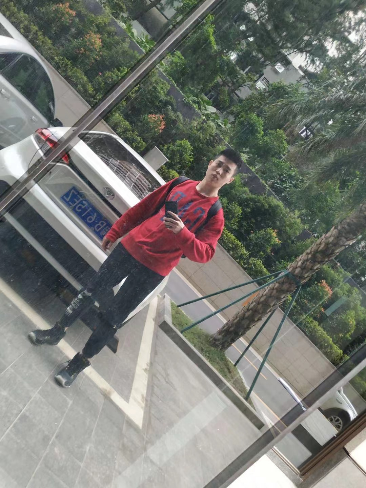

Ph.D. student of Computer Science
Stony Brook University under supervision Shuai Mu of 2020-current
Chinese University of Hong Kong, Shenzhen 2018-2020.1(Quit)
Bachelor of Science in Engineering
Rank: 2/556 GPA: 93.618/100 (or 3.94/4)
Major：Telecommunication Engineering
School of Information and Communicaion Engineering
Beijing University of Posts and Telecommunications 2014-2018
Email: xiang.liu1995[at] gmail.com
Github: Lebron Lambert
Because of the policy PP10043 of the US government, I cannot go to the US due to my un- dergraduate school——Beijing University of Posts and Telecommunications without a VISA.
I used to be a Ph.D. student studying machine learning and published some papers. Nowadays I am a current Stony Brook CS Ph.D. student
under the supervision of Shuai Mu and learn the knowledge of distributed system, consensus and basic idea of Raft Paxos (as raft and paxos are too complex,
I could not say I fully understand them). Recently I am an intern in TDSQL Group of Tencent Inc. in Beijing and doing research in solving
predicated based write skew and phantom for concurrent transactions and distributed databases by using OCC methods.
I am determined to be a Doctor one day and love the high knowledge bar field so much, thus I still have the courage to restart to apply for a Ph.D. position.
Research Intern
Intern at Toutiao AI-Lab,Beijing, China, NOv 2017 – Current
Focus on surveillance video parsing in computer vision
Research Intern
Sailing Lab, Carnegie Mellon University, Pittsburgh, July 2017 – Sept 2017
Focus on knowledge of analyzing genes, especially in the field of correcting the confoundering factors among the high dimension heterogeneous data.
Participated in building the genatic association database
Contributed to GenAMap
Research Intern
Key Lab of Pattern Recognition of Intelligent System, School of Information and Telecommunication Engineer Science, BUPT, Beijing, May 2016 – May 2017
Acquired the knowledge of Machine Learning, especially in the field of computer vision and statistic machine learning, also object detection and segmentation.
Liu, X., Wang, H., Tao, Y., Ye, W., Jin, Q., Cohen, W., Xing, EP. Automatic Human-like Mining and Constructing Reliable Genetic Association Database with Deep Reinforcement Learning. PSB (Pacific Symposium on Bicomputing) 2019 accepted
Liu, X., Wang, H., Ye, W., & Xing, EP. Sparse Variable Selection in High Dimensional Heterogeneous Data with Tree Structured Responses. Bioinformatics (impact factor 7.307) submitted
Wang, H., Liu, X. Xiao, Y. Xu, M., &Xing, EP. Multiplex Confounding Factor Correction for Genomic Association Mapping with Squared Sparse Linear Mixed Model. IEEE BIBM 2017 Accepted, Student Award, Accept Rate:19%. Methods Accepted (impact factor 3.782)
Ye, W. Liu, X. Wang, H. & Xing, EP. A Sparse Graph-structured Lasso Mixed Model for Genetic Association with Confounding Correction. RECOMB 2018 submitted
Wang, H. Liu, X. Ye, W.， Everlasting Iatric Researcher (Eir): Identifying the Article and Reading for Genetic Association Knowledge. 5th Annual LTI Student Research Symposium poster
Chi, G., Wang, Y., Liu, X. Qiu, Y. Latency-Optimal Task Offloading for Mobile- Edge-Computing System in 5G Heterogeneous Network. IEEE VTC 2018 Accpeted.
Li, G., Xu, S., Liu, X. Li, L., Wang, C. Jersey Number Recognition with Semi-Supervised Spatial Transformer Network. CVPR 2018 Workshop Accpeted.
Interactive Blind Helper Methods and Equipment